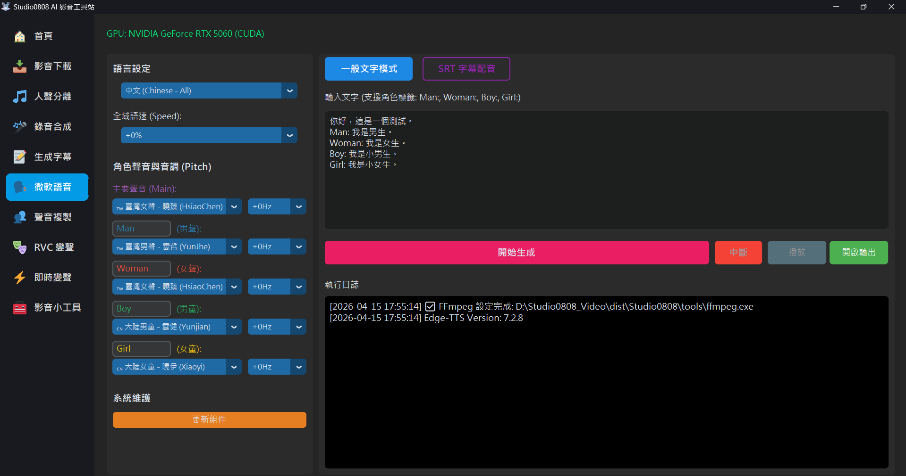

This application integrates Microsoft's latest Edge-TTS (Azure Cognitive Services) technology, allowing you to use high-quality AI neural network voices for free without needing to apply for complex API keys.
Unlike traditional robotic voices, Neural TTS models can generate extremely natural human voices with intonation and emotion, widely used for:
The system built-in supports multiple language models, including:
To meet more detailed voice needs, this closed beta version adds powerful independent control features:
-50% (slow) to
+50% (fast).+20Hz or
+30Hz.-20Hz or -30Hz.Simply enter text to generate speech. It supports a special **"Role Tag"** feature, allowing you to switch between different voices in the same text block:
Man: Hello, I am the father.
Woman: Hi, I am the mother.
Boy: I am Jimmy!
Girl: I am Jenny~
(No tag): This is the narrator's voice.The system will automatically switch to the corresponding role settings (including your independent pitch settings) based on the tags.
Load an .srt subtitle file directly, and the system will generate speech based on the
subtitle's timeline.
A: This is because Microsoft updated their API verification mechanism. Please click the 🔄 Update Core (Fix 403) button in the bottom left of the interface. The
system will automatically update the edge-tts core component to fix this issue.
A: While some foreign models (like Japanese) can read Kanji, their pronunciation is usually inaccurate. If you input Chinese content but select a foreign model (like German, French), the system will automatically detect this and issue a clear warning (precisely indicating which model mismatches) to prevent generating erroneous or silent audio.
A: It appears Microsoft officially removed the Yunze model. We recommend switching to **Yunxi** and using **Pitch adjustment** to simulate a similar voice.
A: Since speech synthesis outputs audio to your speakers, your friends can't hear it. You can share it in two ways:
CABLE Input, and then select CABLE Output as your microphone in Discord.
This cleanly transmits just the synthesized voice!